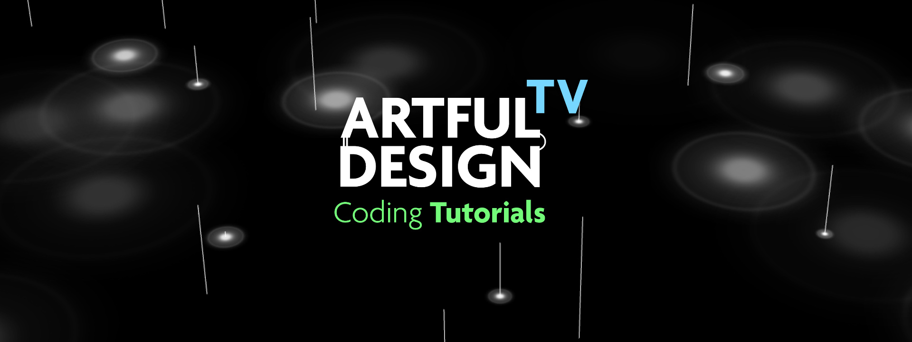
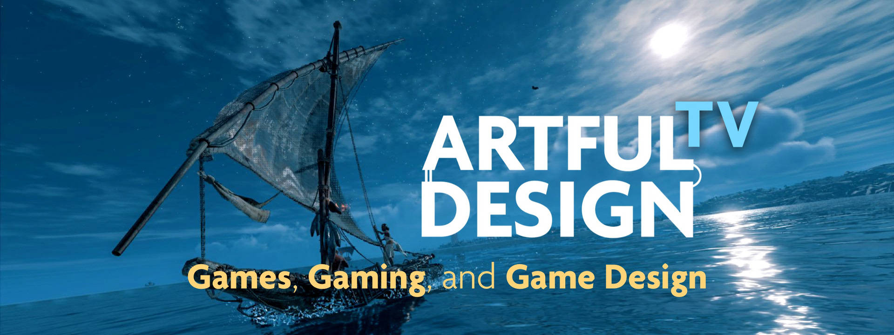

Here you will find recordings of past episodes for Artful Design TV.
If you are joining for the first time, please register here.
From Stanford News: "Fighting Isolation With the Art of Design and Computer Music"
New — check out the Coding Tutorials section of AD:TV

Also — check out the Game Design section of AD:TV

Season 1 Finale — Episode #14 (July 8)
"How Art Makes Better Tech: A Conversation with M Eifler"
watch: YouTube |
Vimeo
special guest: M Eifler, artist and design researcher, Senior Researcher, Microsoft
related materials:
"You're Doing Mixed Reality Wrong" |
"How Art Makes Better Tech"
Wired Op-ed: "VR Is Here to Help With Our New Reality"
Extra! — Aaru: The Idyllic Video Game Sublime
(A video essay, 11 minutes)
Visit Aaru the field of reeds afterlife in Egyptian Mythology in Assassin's Creed Origins / Curse of the Pharaohs, in this video essay.
Part of Artful Design TV's Games, Gaming, Game Design branch.
Episode #13 (July 1, 2020)
"Games, Gaming, Game Design"
watch: YouTube |
Vimeo
related materials: check out the new Game Design section of AD:TV
Episode #12 (June 24)
"Folk Design"
watch: YouTube |
Vimeo
special guest: Jack Atherton, Designer, Researcher, Ph.D. Candidate at CCRMA
related materials: VR Design Lab |
Reality by Example |
group folk design: Jacklantis: a VR island built with interactive machine learning.
Episode #11 (June 17, 2020)
What Do We (Really) Want From Artificial Intelligence?"
watch: YouTube |
Vimeo
special guest: Rebecca Fiebrink, AI/HCI/Music researcher, Professor at University of the Arts London
Wekinator |
Dr. Fiebrink's publications
MOOC: Machine Learning for Musicians and Artists
Humans in the Loop: Designing Interactive AI Systems
Extra! — KIDS (full play-through; 30 minutes)
WHAT. IS. HAPPENING??? Let us explore this delightfully strange short-form "video game" together!
Part of Artful Design TV's Games, Gaming, Game Design branch.
Episode #10 (June 3, 2020)
"Computer Music, Life, and the CCRMA Family"
(due to technical reasons, this week's video is not available)
special guest: Matt Wright, computer music researcher, Matt of all trades, CCRMA Technical Director
Episode #9 (May 27, 2020)
"Why a Laptop Orchestra?"
watch: YouTube |
Vimeo
special guest: Dan Trueman, composer, fiddler, instrument designer, Professor of Music
resources: excerpt from Artful Design |
PLOrk | SLOrk
BitKlavier | SLOrk selected works | PLOrk says its ABCs
Episode #8 (May 20, 2020)
"When Humans and Computers Interact"
watch: YouTube |
Vimeo
special guest co-host: James Landay, HCI Researcher, Stanford CS Professor
AWI vision video |
Smart Primer |
Who is Zuki
2016 SCPKU course in photos |
microchip cat feeder
Episode #7 (May 13, 2020)
"New Interfaces for Musical Expression"
watch: YouTube |
Vimeo
special guest co-host: Doga Cavdir, movement-based instrument designer, CCRMA Ph.D. Candidate
related materials: BodyHarp |
Physical Laptop Instruments |
Felt Sound
Episode #6 (May 6, 2020)
"Coding Music with the ChucK Programming Language"
watch: YouTube | Vimeo
special guest co-hosts: Perry Cook and
Spencer Salazar
related materials: ChucK programming language |
ChucK online course
a book to learn ChucK
| Computer Music Journal article
"Everybody Hack ChucK Tonight" | Perry's COVID Genome Sonifying Robot
Episode #5 (April 29, 2020)
"Virtual Reality Design"
watch: YouTube |
Vimeo
special guest co-host: CCRMA VR Design Lab (website)
related materials: Chunity: Audio Programming in Unity |
Doing vs. Being
Episode #4 (April 22, 2020)
"Bodies in the Room (and Why They Matter)"
watch: YouTube |
Vimeo
special guest co-host: Anne Hege (website), composer, singer, instrument designer, educator
fireside guests: Camille Noufi, CCRMA Ph.D. student •
Elena Georgieva CCRMA MA/MST & lecturer
materials: SLOrk | PLOrk | The Furies: A Laptopera
Episode #3 (April 15, 2020)
"Interactive Audiovisual Design"
watch: YouTube |
Vimeo
special guest co-host: Kunwoo Kim (website), artful designer, CCRMA Ph.D. student
materials from the episode: sndpeek | Chunity | MIDI.CITI
excerpt from Artful Design: "Converge"
Episode #2 (April 8, 2020)
"Zany Musical Inventions with Perry Cook"
watch: YouTube |
Vimeo
special guest co-host: Perry R. Cook (website), computer music researcher, inventor, educator
materials from the episode: COVID-19 Drum Sequencer |
early laptop orchestra piece (2006)
optional homework submission: "a craft, any craft"
Episode #1 (April 1, 2020)
"Welcome to Artful Design TV"
watch: YouTube |
Vimeo
special guest: Hana Shin (website), artful designer, Stanford MA/MST Class of 2015
materials from the episode: Hana's Harry Potter MIDI Art |
SoulPrints (a podcast)
optional homework: submit your COVID-19 haiku(s) here | homework gallery